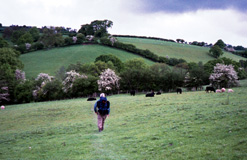
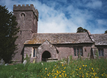
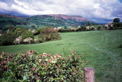
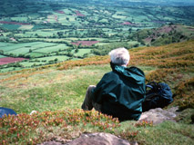
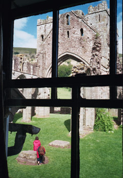

The views this morning were of rolling hills with fields bordered with hawthorns in bloom. We kept stopping to admire the beauty. For several hours we went up and down fields, across streams by footbridges, over lots of stiles, and along lanes bordered on both sides by wildflowers of all colors (but mostly hedge parsley with its white blossoms). At the top of a hill we went through a gate beside the church at Llangatock Lingoed. As I took a picture of the church (pretty, in its wildflower covered churchyard), we heard a "Hello!". It was our friends Fred and Theo, who had camped there, and were just getting their gear back in their packs. They had had a problem finding a place to stay. Because they were so wet from all the rain, they had wanted to stay in a B&B or inn, but the inn they had tried was filled with a group called the "Hashhouse Harriers". Fred and Theo had eaten with this very cheerful bunch of men, who said they were "drinking men with a weakness for running". They drank a lot and then ran, to get over their hangovers - or something like that! After a few more fields, we came out onto a little road, and came across Paul, the owner of the King's Arms, where we had eaten the evening before. We had noticed that he had several pictures of horses on the pub walls, so weren't surprised that he was watching two beautiful horses in the next field. It was a mother and daughter, and he told us that he planned to race the younger one, a two-year-old. They're descendants of Northern Dancer.
After walking up through the field with Paul's horses, we soon came to a hilltop and our first view of the Hatterall Ridge, our next objective. This is the eastern ridge of the Black Mountains. Our route first went down to the town of Pandy, and then started climbing. It was easy enough getting up the steepest part, to where it was just a gentle rise on a pleasant path. The views off the ridge to east and west were both striking. To the east was farmland - fields and meadows. To the west was the remote and beautiful Vale of Ewyas. We stopped to eat lunch in a little hollowed out dip, to get out of the wind. In fact, the wind was so strong that a little later it blew off my pack cover. We had been chatting with some other walkers (they were staying in their caravan in Pandy for a two-week holiday, walking on the ridges every day) and had gone on ahead. Fortunately I heard them shout (I just barely heard them, over the roaring wind) and turned around. They were pointing to my pack cover, which had blown off, but was momentarily stuck on a heather plant. We all ran toward it, and they managed to snag it before it blew away again.
After just a couple of miles of ridge walking, we came to the place where we planned to leave the Offa's Dyke Path and turn left, down into the Vale of Ewyas. We had read about the possibility of spending the night in the ruins of an abbey, and that sounded intriguing! Llanthony Abbey had been built in the early 12th century, but had had problems even before Henry VIII. Raiders had chased most of the monks away, and then "the wildness, isolation and grim Welsh neighbors oppressed the spirit of the monks who remained", according to our book. The abbey suffered again at the Dissolution, but in the 18th century someone bought the property and transformed the south tower and prior's quarters into a lodge for shooting parties. It's now a "hotel" - but not of the standard sort. We were totally delighted by our whole time there. We were excited as we approached the abbey, with the thought that we'd be staying there overnight. There were a good many visitors there -- mostly in the bar, in the crypt which was the bottom floor of the prior's lodging. The young man behind the bar took us up to our room, up a small circular staircase with narrow stone steps. It was a big room, with a big four-poster bed with a canopy. We loved looking out the window into the nave of the abbey. We watched a bunch of children playing something that looked like kick-the-can, hiding behind the pillars and in the transcept areas. What an experience! We went back outside and explored "our" abbey, and then had dinner in "our" dining room. We were the only guests. It was great!
| Previous Day | Next Day | Home Page |